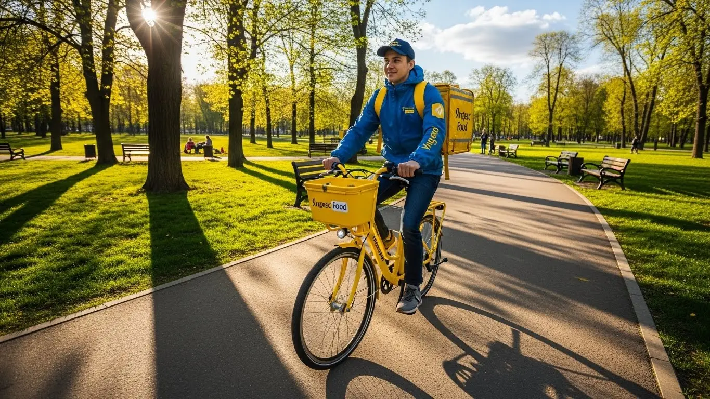
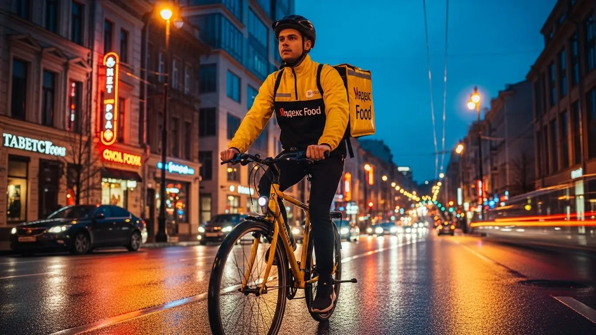

Работа курьером Яндекс Еды в Орле 2025-2026: доход и условия

- Работа курьером Яндекс Еды в Орле: для кого эта вакансия и что вы получите
- Сколько вы будете зарабатывать курьером в Орле: калькулятор дохода и разбор выплат
- Реальный заработок курьера в Орле: смены и месячный доход
- График работы и форматы занятости
- Требования к кандидату и документы
- Самозанятость, налоги и юридическая чистота
- Пошаговое оформление и первый выход на линию в Орле
- Пешком, на вело или на авто: что выгоднее в Орле
- Районы, маршруты и «топовые» зоны заказов в Орле
- Безопасность, страховка, штрафы и оплата простоя
- Плюсы и возможные минусы работы курьером в Орле
- Реальные истории и отзывы курьеров из Орла
- Ответы на главные вопросы о работе курьером Яндекс Еды в Орле
- Короткие ответы на главные вопросы
- Итоги и ваш следующий шаг
Все города
Здорово, земляк. Думаешь, как поднять денег в Орле, и смотришь в сторону жёлтой сумки? Идея хорошая, но сразу в голове куча вопросов: а не убьёшь ли ты свою «ласточку» или велик на наших дорогах за копейки? Сколько реально останется в кармане после всех расходов, продираясь через пробки на Московском шоссе или Комсомольской в час пик? Я здесь, чтобы рассказать тебе не про работу курьером «в вакууме», а про то, как это устроено именно у нас, в Орле.
Поверь, большинство новичков сливаются в первый же месяц не потому, что работа тяжёлая, а потому что ожидания разбиваются о реальность. Никто заранее не считает расходы на бензин, налог для самозанятых и амортизацию. Никто не объясняет, как работает хитрый рейтинг, от которого зависит, дадут ли тебе жирный заказ из центра или отправят за тридевять земель в пустой спальник. В итоге ребята в Орле наступают на одни и те же грабли: катаются по пустым районам в невыгодное время и теряют деньги из-за незнания местной специфики. Кстати, чтобы сразу увидеть актуальные цифры и подать заявку, можно заглянуть на страницу про работу курьером Яндекс Еда в Орле — там всё собрано в одном месте.
В этом гиде мы всё разложим по полочкам. Мы честно посчитаем, сколько чистыми можно заработать за смену в Орле на машине, велосипеде и пешком. Я покажу на карте, где в нашем городе «рыбные» места, а куда лучше не соваться. Разберём, как орловская погода — от летнего зноя до зимней каши на дорогах — влияет на заказы и доход. И, конечно, я расскажу, за что реально штрафуют и как этих штрафов избежать, чтобы работать в плюс, а не в минус.
Меня зовут Алексей. Я сам не один год откатал с жёлтым рюкзаком по Орлу, а сейчас у меня свой небольшой таксопарк-партнёр, так что я вижу всю эту кухню с двух сторон. Никакой рекламной шелухи и обещаний золотых гор не будет. Будет только мясо, реальные цифры и советы, которые сэкономят тебе кучу нервов и денег на старте. Давай по порядку, сейчас всё разложу.
Но прежде чем нырять в детали, давай быстро пробежимся по главным моментам. Этот короткий гид поможет сориентироваться в статье.
Что ты точно узнаешь из этого гида по Орлу
В этой статье ты ТОЧНО узнаешь:
- Сколько реально можно заработать в Орле за смену на машине, велике и пешком, уже за вычетом расходов?
- В каких районах Орла (Заводском, Советском, Железнодорожном) и в какое время суток больше всего заказов и выше коэффициенты?
- За что на самом деле могут снизить рейтинг или применить санкции, и как этого избежать?
- Как устроена работа через самозанятость, сколько платить налогов и почему это проще, чем кажется?
- Что такое «оплата простоя» и как она защищает твой доход, если заказов вдруг стало мало?
- Что выгоднее выбрать для Орла — машину, велосипед или пеший формат, и от чего зависит выбор?
А если тебе некогда читать всю статью — переходи сразу к заключению, где ты найдёшь короткие ответы на все эти вопросы и указания, в каких разделах искать подробности.
А вот ключевые цифры и факты о работе в Орле в одной картинке:
Работа курьером в Орле: ключевые цифры
Работа курьером Яндекс Еды в Орле: для кого эта вакансия и что вы получите
Давай начистоту: работа курьером — это не для всех, но для многих в Орле это реальный шанс заработать без начальника над душой и с по-настоящему гибким графиком. Это не офисная рутина, а постоянное движение и ежедневные выплаты на карту. Если ты ищешь понятную подработку или основную занятость, где доход зависит напрямую от тебя, а не от настроения руководства, — ты по адресу.
Кому подойдёт эта работа в Орле
Эта вакансия — настоящая находка для разных людей. В первую очередь, для студентов, например, из ОГУ им. Тургенева или любого другого вуза. Можно легко совмещать с учёбой: откатал пару часов после лекций — и вот у тебя уже есть деньги на вечер. Никаких проблем с сессией, просто ставишь меньше смен.
Отлично подходит и тем, кому нужна подработка к основной зарплате. Если ты работаешь по графику 2/2 или пятидневку, вечера и выходные можно превратить в дополнительный доход. Опыт работы не требуется — всему научат за полчаса. Главные требования: возраст от 18 лет, смартфон на Android и статус самозанятого (оформляется онлайн за 10-15 минут). Водители на своем авто тоже найдут здесь выгоду: заказов много, а кататься можно по знакомым улицам Орла.
Главные преимущества для жителей районов Заводской, Советский, Железнодорожный
Самый большой плюс — возможность работать рядом с домом. Тебе не нужно тратить час на дорогу до работы через весь Орёл. Живёшь в Заводском районе? Отлично, здесь полно многоэтажек и локальных кафе, а значит, заказы из Яндекс Еды будут всегда. Вышел из подъезда, включил приложение «Яндекс Про» — и ты уже на смене.
Для тех, кто живёт в Советском районе, работа сама просится в руки. Это центр города, где сосредоточены главные рестораны, кафе и офисы. Здесь идеально работать пешим курьером — расстояния небольшие, а заказов в обеденный пик и по вечерам хватает с избытком. Жителям Железнодорожного района тоже удобно: можно работать как в своём районе, так и быстро добираться до соседних локаций, особенно если ты на велосипеде или авто. Ты экономишь и время, и деньги на проезд.
Краткое обещание по доходу и условиям
Теперь о главном — о деньгах. В Орле активный курьер за смену может заработать от 1500 до 3500 рублей. Если рассматривать это как полную занятость, то месячный доход может доходить до 70 000 рублей и выше, особенно у автокурьеров. Цифры реальные, но всё зависит от твоей активности, выбранного транспорта и количества часов на линии.
Условия работы просты и понятны. Во-первых, свободный график — ты сам решаешь, когда и сколько работать. Во-вторых, ежедневные выплаты на карту — не нужно ждать зарплату месяц. В-третьих, начать можно без опыта, а фирменную термосумку или термокороб и всё необходимое тебе выдадут. Это честная сделка: ты доставляешь заказы — сервис сразу платит деньги.
У меня знакомый парень, студент ОГУ, живёт в 909-м квартале. Он купил себе недорогой велосипед и катает заказы по своему Заводскому району вечерами после учёбы, часа по 3-4. Стабильно привозит домой 1200–1600 рублей за смену. Говорит, что это покрывает все его расходы на жизнь и развлечения, и ему не приходится просить денег у родителей. Главное, что он не тратит время на дорогу до «работы» — его рабочий район начинается прямо у его дома.
В общем, работа курьером в Яндекс Еде в Орле — это гибкий и доступный вариант для тех, кто хочет получать деньги без лишней бюрократии. Основные плюсы — это свободный график, ежедневные выплаты и возможность доставлять заказы в своём районе. Если ты новичок, начни именно с него: ты знаешь все дворы и срезы, а значит, будешь работать быстрее и зарабатывать больше с первого дня.
Сколько вы будете зарабатывать курьером в Орле: калькулятор дохода и разбор выплат
Многих новичков волнует вопрос: «Сколько я буду получать?». Заработок курьера — это не просто фиксированная ставка. Это конструктор, который собирается из нескольких частей. Если понять, как он устроен, можно легко влиять на свой итоговый доход. Давай разберём по косточкам, из чего складываются твои деньги.
Из чего складывается доход курьера
Твой заработок в «Яндекс Про» формируется из нескольких ключевых компонентов. Понимание каждого из них поможет тебе зарабатывать больше.
- Оплата за сам заказ. Базовая сумма за то, что ты принял и выполнил доставку.
- Плата за расстояние. Сервис доплачивает за каждый километр пути от ресторана или магазина до клиента. Чем дальше везти, тем больше оплата.
- Повышающие коэффициенты. В часы пик (обед, ужин), в плохую погоду или в районах с высоким спросом на карте в приложении появляются «фиолетовые зоны». Заказы из них оплачиваются с дополнительным множителем.
- Бонусы. Сервис часто предлагает персональные цели. Например, выполни 15 заказов за день и получи дополнительно 500 рублей. Это отличный стимул работать активнее.
- Чаевые от клиентов. Все чаевые, которые оставляют через приложение, поступают на твой счёт в полном объёме. Яндекс не берёт с них комиссию.
- Оплата ожидания (простоя). Важный момент: если ты пришёл в ресторан, а заказ ещё не готов, сервис компенсирует тебе время ожидания. Ты не теряешь деньги из-за медлительности кухни.
- Компенсация проезда. На некоторых длинных заказах может быть предусмотрена доплата, покрывающая расходы на общественный транспорт.
Как пользоваться калькулятором дохода
Чтобы прикинуть свой потенциальный заработок, можно использовать специальный калькулятор на сайте для партнёров. Пользоваться им очень просто. Тебе нужно выбрать всего три параметра: твой город (Орёл), тип доставки (пеший курьер, курьер на велосипеде или на автомобиле) и сколько часов в день и дней в неделю ты планируешь работать.
На основе этих данных калькулятор покажет примерный дневной и месячный доход. Важно понимать, что это прогноз, основанный на средних показателях по городу. Твой реальный заработок может быть как выше, если ты будешь ловить пиковые часы и бонусы, так и ниже, если будешь выходить на линию в самое спокойное время. Но как ориентир для старта — это отличный инструмент.
Прикинь свой доход в Орле
8 часов
5 дней
Примерный доход в месяц:
Расчет является примерным и основан на средней ставке в Орле (~420 ₽/час). Реальный доход зависит от спроса, бонусов и вашего графика.
Чтобы увидеть более точные цифры и сразу подать заявку, посмотри страницу про работу курьером Яндекс Еда в твоём городе — там есть актуальные условия и анкета.
Примеры расчёта для пешего, вело- и авто‑курьера в Орле
Давай посмотрим на конкретных примерах, сколько можно заработать в Орле, выбрав разный формат работы.
- Пеший курьер. Представь, что ты работаешь в центре, в Советском районе. Твоя зона — ул. Ленина, Карачевская, где много кафе. Ты выходишь на 4-5 часов в день, в основном в обед и вечером. За счёт коротких расстояний и плотного потока заказов ты можешь делать 3-4 доставки в час. В день выходит около 1600–2200 рублей. За месяц при графике 5/2 это может составить 35 000–48 000 рублей.
- Курьер на велосипеде (велокурьер). Ты базируешься в Заводском районе и доставляешь заказы по спальным кварталам. Велосипед позволяет тебе брать заказы на большее расстояние, чем пешему, и не стоять в пробках. Работая по вечерам и в выходные, примерно 25 часов в неделю, твоя зарплата может составить 2200–3000 рублей за смену. В месяц это выливается в сумму около 45 000–60 000 рублей.
- Курьер на автомобиле. На автомобиле ты — король доставки. Ты можешь брать самые выгодные заказы: большие закупки из гипермаркетов «Лента» или «Европа» в рамках Яндекс Доставки, а также доставлять еду в отдалённые части города или даже в пригород. Работая полный день, 8-9 часов, ты можешь зарабатывать 3500–5000 рублей в день (уже за вычетом бензина). В месяц при полной занятости твой доход может достигать 70 000–90 000 рублей, особенно если активно работать в непогоду, когда коэффициенты максимальные.
Один из водителей в моём таксопарке, парень лет 30, решил попробовать себя в доставке на своей старенькой «Гранте». Он выработал свою тактику для Орла: утром развозит продукты из METRO, днём переключается на центр и обеды для офисов, а вечером едет в спальники, где люди заказывают ужины. В прошлую пятницу, когда лил дождь, он за 10 часов работы сделал почти 6000 рублей грязными. После вычета бензина осталось около 5000. Он говорит, что в доставке, в отличие от такси, меньше нервов и больше стабильности в заказах.
В итоге, твой заработок курьером в Орле — это гибкая система, которой можно и нужно управлять. Твоя итоговая зарплата складывается из множества частей, от оплаты за заказ до бонусов и чаевых. Главный совет: не ленись изучать карту спроса в приложении «Яндекс Про». Всегда двигайся в сторону «фиолетовых» зон с повышенным коэффициентом — именно там находятся самые большие деньги.
Реальный заработок курьера в Орле: смены и месячный доход
Сразу к главному вопросу: сколько реально можно заработать курьером в Орле? Забудь про обещания «до 150 тысяч», это не московские реалии. У нас цифры скромнее, но зато честные и вполне достижимые, если подходить к делу с головой. Фиксированной зарплаты здесь нет, и это важное условие работы: твой доход — это прямая сумма всех выполненных заказов, бонусов и чаевых. Сколько набегаешь, столько и получишь.
Главное, что нужно понять, работая в сервисах Яндекса: твой заработок зависит от трёх вещей — как ты доставляешь (пешком, на велосипеде или на авто), сколько часов ты на линии и в какое время работаешь. Можно выходить на пару часов после основной работы и получать приятную прибавку к зарплате. А можно сделать это основной профессией и зарабатывать на уровне средней офисной зарплаты в Орле, но при этом без начальников и со свободным графиком.
Диапазон дохода для подработки и полной занятости
Давай разберём конкретные цифры, чтобы ты мог прикинуть, на что рассчитывать. Это средние значения по Орлу, основанные на моём опыте и заработке знакомых курьеров.
Если это подработка (2–4 часа в день, 3–4 раза в неделю):
- Пеший курьер: Идеально для центра (Советский, Железнодорожный районы). За короткую смену в 3-4 часа можно сделать 600–1000 рублей. В месяц выходит порядка 12 000 – 20 000 рублей. Неплохо для студента или как дополнение к основному доходу.
- Велокурьер: Ты мобильнее, успеваешь больше. За те же 3-4 часа твой доход будет уже 800–1500 рублей. В месяц это уже 18 000 – 30 000 рублей.
- Курьер на своем авто: Самый высокий потенциал, особенно в плохую погоду или на дальних заказах. За вечернюю смену можно заработать 1200–2500 рублей «грязными». После вычета бензина останется чистыми 1000–2000. В месяц на подработке можно делать 25 000 – 45 000 рублей.
Если это полная занятость (8–10 часов в день, 5 дней в неделю):
- Пеший курьер: За полный день выходит 1800–2800 рублей. В месяц это 40 000 – 55 000 рублей. Физически тяжело, но реально.
- Велокурьер: Дневной заработок — 2500–4000 рублей. В месяц можно стабильно выходить на 50 000 – 75 000 рублей.
- Автокурьер: Здесь доход самый интересный. В хороший день можно заработать 4000–6000 рублей. За вычетом топлива (около 15-20%) чистый месячный доход составит от 70 000 до 110 000 рублей при плотном графике.
Как район, время суток и погода влияют на доход
Твой заработок — это не просто ставка за час, он постоянно меняется. Чтобы зарабатывать больше, нужно ловить моменты высокого спроса. Система работает просто: чем больше заказов и меньше свободных курьеров, тем выше оплата за каждую доставку. Это называется «повышающий коэффициент».
Главные факторы, которые включают эти коэффициенты в Орле:
- Время суток: Пики — это обед (с 12:00 до 15:00), когда заказывают еду в офисы, и вечер (с 18:00 до 22:00), когда люди возвращаются с работы. Пятница и суббота вечером — это «золотое» время, коэффициенты могут быть самыми высокими.
- Районы: В центре, особенно в районе улиц Ленина, Московской, всегда много заказов из кафе и ресторанов — это основная зона работы курьеров Яндекс Еды. Крупные ТРЦ вроде «ГРИНН» или «РИО» — тоже точки притяжения. В спальных районах (Заводской, Северный) спрос растёт вечером и в выходные, когда люди заказывают продукты и готовую еду на дом.
- Погода: Дождь, снегопад или сильная жара — твой лучший друг. Большинство курьеров предпочитают сидеть дома, а количество заказов резко возрастает. В такие дни можно за 3-4 часа заработать как за целый обычный день. Плюс, в плохую погоду клиенты чаще оставляют хорошие чаевые из благодарности.
Советы по увеличению заработка от опытных курьеров
Просто выйти на линию и ждать заказов — стратегия так себе. Чтобы выжимать максимум из своего времени, нужно работать умнее, а не больше. Вот несколько проверенных советов.
Во-первых, планируй свои смены. Заранее бронируй в приложении «Яндекс Про» плановые слоты на самое выгодное время — вечера пятницы и выходные. Такие слоты разбирают быстро. Во-вторых, изучи свой район. Знай, где находятся популярные рестораны и магазины, чтобы быстрее забирать заказы. Не гоняйся за «фиолетовыми зонами» (зоны с высоким спросом) через весь город — пока доедешь, спрос может упасть, а ты потратишь время и бензин. Лучше работать в одной-двух локациях, которые ты хорошо знаешь.
Используй свой транспорт с умом. Если ты на машине, не брезгуй короткими заказами в центре, но если видишь пробку на карте — припаркуйся и пройди 300 метров пешком, это будет быстрее. Велосипед идеален для быстрой доставки в радиусе 3-4 км в спальных районах, где на машине можно застрять во дворах. И главное — будь вежлив с клиентами и сотрудниками ресторанов. Хорошие отношения и простая улыбка часто превращаются в чаевые и помогают решать спорные моменты без нервов.
Один мой знакомый студент на старенькой «девятке» за прошлую субботу сделал 5200 рублей. Он начал в обед в районе ТЦ «РИО», а вечером, когда пошёл дождь, перебрался в Заводской район. Коэффициенты были х1.8, плюс он получил почти 500 рублей чаевыми. Его стратегия — работать именно в «плохую» погоду и в выходные, а в будни отдыхать.
В итоге, реальный заработок курьера в Орле полностью в твоих руках. Он зависит от выбранного транспорта, времени и умения ловить выгодные моменты. Не жди золотых гор в первый же день, но при грамотном подходе можно выйти на стабильный и достойный доход. Мой совет: начни с подработки в пиковые часы, чтобы понять механику, а потом уже решай, подходит ли тебе полная занятость.
График работы и форматы занятости
Одно из главных преимуществ работы курьером — свободный график. Здесь нет начальника, который стоит над душой и контролирует, во сколько ты пришёл и ушёл. Ты сам решаешь, когда работать: хочешь — выходишь на полный день, хочешь — на пару часов вечером. Это делает работу в доставке идеальным вариантом для подработки или для тех, кто не любит стандартный офисный график с 9 до 18.
В приложении «Яндекс Про» есть два основных формата: плановые слоты и свободные выходы. Слот — это когда ты заранее бронируешь время и район, например, с 18:00 до 22:00 в Советском районе. Это гарантирует тебе минимальную оплату, даже если заказов будет мало. Свободный выход — ты просто нажимаешь кнопку «На линию» в любое время и в любом месте и начинаешь получать заказы. Этот формат даёт полную свободу, но без гарантий минимального дохода.

Подработка после учёбы или основной работы
Совмещать доставку с другой деятельностью проще простого. Большинство новичков как раз и начинают с подработки, чтобы понять, как всё устроено, и заработать дополнительные деньги.
- Сценарий для студента ОГУ. Парень учится на дневном. С понедельника по четверг он выходит на велосипеде на 3-4 часа после пар, примерно с 18:00 до 22:00. Катается по центру, развозит ужины из кафе. В субботу берёт длинный слот на 8 часов. В итоге, не напрягаясь, он добавляет к стипендии 20-25 тысяч рублей в месяц, которых хватает на развлечения и личные расходы.
- Сценарий для офисного работника. Мужчина работает в офисе до 17:00. У него есть машина. Три-четыре раза в неделю он после работы выходит на линию на 3-4 часа. Берёт заказы по всему городу, часто выполняет доставки из «Яндекс Маркета» или посылки от людей. В месяц такая подработка приносит ему 30-40 тысяч рублей, которые он откладывает на отпуск или крупные покупки.
- Сценарий для человека со сменным графиком. Например, ты работаешь 2/2. В свои выходные дни ты можешь выходить на полные смены по 8-10 часов и зарабатывать как на основной работе. Это отличный способ быстро закрыть кредит или накопить на что-то серьёзное.
Полная занятость: как выглядит типичный день курьера
Если ты решил сделать доставку своей основной работой, твой день будет строиться вокруг пиков спроса. Это не значит, что нужно работать без перерыва по 12 часов. Грамотное планирование позволяет и хорошо заработать, и оставить время на отдых.
Типичный день автокурьера в Орле выглядит примерно так. Он выходит на линию около 10:00, начиная с доставок из магазинов и посылок в своём районе, например, в Северном. К 12:00 он смещается ближе к центру, в Советский район, чтобы поймать волну обеденных заказов из ресторанов. С 15:00 до 17:00 — затишье. В это время можно пообедать, заехать по своим делам или просто отдохнуть в машине, поставив приложение на паузу. Около 18:00 начинается вечерний пик, самый прибыльный. Курьер активно работает до 21:00-22:00, выполняя заказы как в центре, так и развозя их по спальным районам. После этого он либо завершает смену, либо, если есть силы и спрос, остаётся ещё на час-другой.
Как планировать слоты и выходы через приложение «Яндекс Про»
Приложение «Яндекс Про» — твой главный рабочий инструмент. Именно через него ты управляешь своим графиком. В разделе «Расписание» ты видишь доступные плановые слоты на несколько дней вперёд. Они разделены по районам и времени. Выбираешь подходящий, нажимаешь «Записаться» — и всё, смена запланирована.
Почему важно не опаздывать на плановые слоты? Система Яндекс Про ценит надёжность. Если ты забронировал слот, сервис рассчитывает на тебя в этом районе в это время. Регулярные опоздания или невыходы на забронированную смену снижают твой рейтинг и могут привести к временному ограничению на бронирование слотов. А это напрямую бьёт по стабильности твоего дохода и регулярности выплат.
Кроме того, высокий рейтинг и показатель «Активность» дают тебе приоритет при распределении заказов. Это значит, что при прочих равных система сначала предложит выгодный заказ тебе, а не курьеру с низкими показателями. Поэтому относись к слотам ответственно: если записался — выходи вовремя. Если планы изменились — отмени слот заранее, чтобы не получить штрафных баллов.
У меня был водитель, который постоянно опаздывал на 15-20 минут на утренние слоты. Сначала ему приходили предупреждения, потом система на неделю заблокировала ему доступ к бронированию. Он мог работать только на свободных выходах, из-за чего его доход просел почти на треть, так как он пропускал утренние гарантированные бонусы. После этого он стал относиться к графику гораздо серьёзнее.
В конечном счёте, график работы — это твоя личная ответственность и твой главный инструмент для управления доходом. Яндекс даёт тебе полную свободу, но чтобы она работала на тебя, а не против тебя, нужна самодисциплина. Мой совет: комбинируй плановые слоты в пиковые часы для стабильности и свободные выходы, когда просто хочешь подработать без обязательств. Так ты сможешь добиться максимального заработка на условиях, которые удобны именно тебе.
Требования к кандидату и документы
Многих пугает, что для работы курьером в Яндекс Еде нужны особые навыки, опыт или кипа бумаг. На деле всё гораздо проще. Никто не будет требовать диплом или трудовую книжку с двадцатилетним стажем. Главное — быть совершеннолетним, ответственным и иметь желание работать. Остальное — технические детали, которые решаются за один день.
Требования к тебе как к человеку минимальны: адекватность, вежливость и пунктуальность. Если доставляешь заказ вовремя и с улыбкой, клиент останется доволен, а твой рейтинг в приложении Яндекс Про будет расти. Физическая форма важна, но никто не ждёт олимпийских рекордов. Если можешь без проблем подняться на пятый этаж как пеший курьер или проехать на велосипеде пару километров, ты уже подходишь.
Ко мне как-то пришёл устраиваться парень, студент орловского Политеха, лет 20. Переживал, что его не возьмут, потому что «нигде официально не работал». Я ему объяснил, что для такой подработки это не главное. В тот же день он заполнил анкету, прошёл обучение, получил термокороб и вечером вышел на свой первый слот в Советском районе. За три часа заработал около 1200 рублей чистыми. Был страшно горд собой. Вот тебе и весь «опыт», который нужен.
В целом, если тебе есть 18, ты гражданин РФ или страны ЕАЭС и у тебя есть смартфон на Android, считай, 90% пути пройдено. Остаётся только подготовить небольшой пакет документов, и можно выходить на линию. Советую собрать все бумаги заранее, чтобы процесс регистрации прошёл максимально быстро.
Возраст, гражданство и базовые условия
Давай по порядку разберёмся, кто может стать курьером. Первое и самое главное — возраст. Строго с 18 лет. Никаких исключений здесь нет, потому что формат работы предполагает заключение договора с тобой как с самозанятым, а это юридически возможно только для совершеннолетних.
Второе — гражданство. Работать могут граждане Российской Федерации, а также граждане стран Евразийского экономического союза (ЕАЭС). К ним относятся Беларусь, Казахстан, Армения и Киргизия. Это связано с особенностями налогового законодательства и оформления. Если у тебя паспорт одной из этих стран, проблем не возникнет.
И третье — общие условия. Для пешего курьера или велокурьера важна базовая физическая выносливость, ведь придётся много ходить или ездить на велосипеде. Для водителя-курьера на своем авто главное — наличие прав, исправного автомобиля и умение ориентироваться в городе. Специальных медицинских справок о здоровье на старте не требуют, но ты сам должен понимать, что работа активная.
Какие документы нужны для работы курьером
Список документов короткий и понятный, никакой лишней бюрократии. Чтобы не бегать в последний момент, подготовь всё заранее. Вот что тебе понадобится:
- Паспорт. Основной документ, удостоверяющий личность. Нужен для оформления договора и регистрации в качестве самозанятого. Гражданам стран ЕАЭС может потребоваться нотариально заверенный перевод.
- ИНН (Идентификационный номер налогоплательщика). Он нужен для постановки на учёт в налоговой. Если ты его не знаешь или потерял свидетельство, номер легко узнать на сайте ФНС по паспортным данным.
- Банковская карта. Подойдёт дебетовая карта любого российского банка, оформленная на твоё имя. Именно на неё будут приходить ежедневные выплаты твоего заработка. Карта родственников или друзей не подойдёт.
- Медицинская книжка. Здесь ситуация плавающая. Чаще всего для доставки запечатанных заказов из ресторанов и магазинов (Яндекс Еда) она не требуется, так как ты не контактируешь с открытыми продуктами. Но некоторые партнёры могут её попросить. Лучше уточнить этот момент на этапе оформления.
- Для автокурьеров дополнительно: водительское удостоверение (ВУ) и свидетельство о регистрации транспортного средства (СТС).
Как видишь, ничего сверхъестественного. Большинство этих документов и так всегда под рукой.
Можно ли работать с 16 лет и какие есть альтернативы
Частый вопрос от молодых ребят: берут ли в Яндекс Еду с 16 или 17 лет? Отвечаю честно: нет, не берут. Официальное трудоустройство в качестве курьера-партнёра возможно только с 18 лет. Это связано с юридической стороной вопроса — сервис сотрудничает с самозанятыми, а получить этот статус полноценно можно только по достижении совершеннолетия.
Понимаю желание подростков заработать свои первые деньги, это правильно. Но правила есть правила. Не стоит пытаться их обойти, используя чужие документы — это быстро вскроется, и аккаунт заблокируют навсегда. Лучше направить энергию на поиск других, легальных вариантов подработки в Орле.
Какие есть альтернативы для подростков? Можно устроиться промоутером, раздавать листовки — в центре, у ТЦ «РИО» или «ГРИНН» часто можно увидеть такие вакансии. Летом бывают возможности для работы в парках или помощником в летних кафе. Также стоит посмотреть вакансии на местных сайтах по поиску работы, иногда там появляются предложения специально для школьников и студентов младших курсов.
Самозанятость, налоги и юридическая чистота
Многих новичков пугает слово «самозанятость». Кажется, что это что-то сложное, связанное с налогами, отчётами и бумажной волокитой. На самом деле, это самый простой и прозрачный способ работать на себя и получать официальный доход. Забудь про «серые» зарплаты в конвертах — здесь всё легально и максимально автоматизировано.
Самозанятость (или налог на профессиональный доход, НПД) — это специальный налоговый режим, созданный государством как раз для таких людей, как мы: курьеров, таксистов, фрилансеров. Он позволяет легализовать свой доход, не открывая ИП и не вникая в сложную бухгалтерию. Весь учёт ведётся в простом приложении на смартфоне, а налог — один из самых низких в стране.
У меня в парке работает водитель, ему за 50. Он всю жизнь привык к наличке и «договорённостям». Когда я ему объяснил про самозанятость, он сначала отмахивался: «Лёш, да ну, эти ваши интернеты, налоги, я в этом не разберусь». Я сел с ним, и мы за 10 минут зарегистрировали его в приложении «Мой налог». Когда через месяц он увидел, как автоматически посчитался налог и он оплатил его в два клика, его мнение поменялось. Теперь он ценит, что у него есть официальный доход, который можно показать в банке для кредита.
В итоге, самозанятость — это не проблема, а преимущество. Она даёт тебе юридическую чистоту, официальный статус и спокойствие. Не нужно бояться налоговой или думать, как подтвердить свои заработки. Всё делается за тебя, а ты просто выполняешь заказы и получаешь деньги.
Почему курьеры Яндекс Еды работают как самозанятые
Выбор формата самозанятости — это не прихоть Яндекса, а самое логичное и удобное решение для обеих сторон. Для сервиса это возможность легально сотрудничать с тысячами независимых исполнителей по всей стране, предлагая им свободный график. А для тебя как для курьера это даёт несколько ключевых преимуществ.
Во-первых, это официальный доход. Все деньги, которые ты получаешь, — «белые». Ты можешь взять справку о доходах в приложении «Мой налог» и использовать её для получения кредита, ипотеки или визы. Во-вторых, это простота. Никаких деклараций, бухгалтеров и походов в налоговую. Приложение само формирует чеки и считает налог. В-третьих, это легальность. Ты работаешь в рамках закона, платишь налоги и спишь спокойно, не опасаясь штрафов.
По сути, самозанятость — это компромисс между полной свободой фриланса и стабильностью официальной работы. Ты сам себе начальник, выбираешь, когда и сколько работать, но при этом твои доходы полностью легальны. Это современный стандарт для работы с крупными платформами.
Как за 10 минут оформить самозанятость через «Мой налог»
Процесс регистрации до смешного прост и занимает не больше времени, чем заказ пиццы. Всё делается онлайн, никуда ходить не нужно. Вот пошаговая инструкция:
- Скачай приложение. Найди в Google Play или App Store официальное приложение ФНС России — «Мой налог».
- Начни регистрацию. Открой приложение и нажми кнопку «Стать самозанятым».
- Выбери способ. Самый быстрый — «По паспорту РФ». Тебе нужно будет отсканировать главный разворот паспорта камерой телефона. Приложение само распознает все данные.
- Сделай селфи. Приложение попросит сделать фотографию лица, чтобы сверить её с фото в паспорте. Это стандартная процедура подтверждения личности.
- Подтверди данные. Проверь, правильно ли распознались твои ФИО и паспортные данные, и подтверди регистрацию. Нужно будет указать регион ведения деятельности — «Орловская область».
Вот и всё. Обычно через 5–10 минут приходит уведомление, что ты успешно зарегистрирован в качестве плательщика налога на профессиональный доход. Также зарегистрироваться можно через приложение «Яндекс Про» — оно само проведёт тебя по всем шагам.
Сколько и как платить налоги
Теперь о самом главном — о деньгах. Ставка налога для самозанятого курьера, работающего с Яндекс Едой, составляет 6%. Эта ставка применяется ко всем доходам, полученным от юридических лиц и ИП. Так как Яндекс — юридическое лицо, именно этот процент будет удерживаться с твоего заработка.
Процесс уплаты налога полностью автоматизирован и не требует от тебя никаких усилий. Вот как это работает:
- Яндекс передаёт информацию о твоих выплатах в налоговую службу.
- Приложение «Мой налог» автоматически рассчитывает сумму налога за прошедший месяц.
- До 12-го числа следующего месяца тебе в приложение приходит квитанция с итоговой суммой.
- Оплатить налог нужно до 28-го числа. Это можно сделать прямо в приложении, привязав банковскую карту.
Это намного проще и безопаснее, чем работать неофициально. Во-первых, ты защищён законом. Во-вторых, низкая ставка в 6% — это небольшая плата за спокойствие и официальный статус. Кроме того, всем новым самозанятым государство даёт налоговый вычет в размере 10 000 рублей. Пока этот бонус не исчерпается, твоя ставка будет временно снижена, что делает старт ещё более выгодным.
Пошаговое оформление и первый выход на линию в Орле
Многих новичков, которые ищут подработку или первую работу без опыта, пугает процесс трудоустройства — кажется, что это долго, сложно и требует кучи бумаг. На деле всё устроено так, чтобы ты мог начать зарабатывать максимально быстро. Весь процесс отлажен, проходит онлайн и часто позволяет выйти на линию в тот же день, без поездок в офис и нудных собеседований. Главное — иметь под рукой телефон и необходимые документы.
Шаг 1–2: анкета и онлайн‑обучение
Всё начинается с простой анкеты на сайте. Это одно из главных условий работы: не нужно резюме и долгого рассказа про предыдущий опыт — только базовая информация: ФИО, возраст, гражданство и контакты. После этого нужно будет загрузить фото паспорта и ИНН. Это стандартные документы для проверки, которая подтверждает твою личность и даёт возможность легально перечислять доход.
Как только данные проверят, откроется доступ к короткому онлайн-обучению. Это не скучные лекции, а несколько видеороликов и тестов прямо в приложении «Яндекс Про». Тебе расскажут об основах: как принимать и доставлять заказы, как общаться с клиентами и службой поддержки, что делать в нестандартных ситуациях. Обучение занимает от силы час, и его можно пройти где угодно — хоть дома на диване. Тесты простые, на понимание материала, так что сдать их не составит труда.
Шаг 3: получение сумки и доступа к заказам в Орле
После успешного прохождения обучения ты почти готов к работе. Последний обязательный атрибут — фирменная термосумка, или термокороб. Она нужна, чтобы доставлять заказы из Яндекс Еды горячими, а напитки — холодными. Это стандарт качества сервиса. В Орле получить экипировку можно в партнёрском центре. Точный адрес появится в приложении «Яндекс Про» после того, как ты завершишь обучение.
Иногда партнёры предлагают доставку на дом, что ещё удобнее. Сумка обычно выдаётся бесплатно или в аренду с небольшим залогом, который потом возвращается. Как только термокороб у тебя на руках, твой аккаунт полностью активируют, и ты получаешь доступ к заказам Яндекс Еды и Доставки в городе.
Шаг 4: первый слот и первый доход
Теперь самое интересное — первый выход на линию. В приложении «Яндекс Про» ты увидишь карту Орла с доступными зонами и слотами. Слот — это запланированный промежуток времени для работы, например, с 18:00 до 22:00. Для начала я советую выбрать знакомый тебе район, например, тот, где ты живёшь. Так будет спокойнее: ты знаешь все дворы и короткие пути.
Выбираешь подходящий слот, приезжаешь в указанную зону, нажимаешь кнопку «На линии» — и всё, ты в системе. Первый заказ может прийти уже через несколько минут. Выполняешь его, потом следующий, и вот ты уже заработал первые деньги. Выплаты приходят на карту. Многие партнёры предлагают ежедневные выплаты, а это значит, что свой первый доход ты можешь получить уже на следующий день после регистрации.
Вот реальный пример из моей практики. Студент ОГУ искал подработку. В понедельник утром заполнил анкету, к обеду прошёл обучение. После пар заехал в офис партнёра на Комсомольской, забрал сумку. Вечером вышел на пару часов в своём Советском районе, чтобы просто попробовать. За три часа спокойно сделал несколько заказов и заработал около 800 рублей. Говорит, не ожидал, что всё будет так быстро и просто.
В итоге, весь процесс от анкеты до первого заработка в Орле реально уложить в один день. Главное — не тянуть и следовать простым шагам в приложении. Мой совет: как только получил доступ, не откладывай первый выход. Чем быстрее начнёшь, тем быстрее поймёшь, как всё устроено, и начнёшь стабильно зарабатывать.
Пешком, на вело или на авто: что выгоднее в Орле
Выбор транспорта — ключевой момент, который напрямую влияет на твой доход и комфорт. Орёл — город не самый большой, но со своими особенностями: узкий центр, широкие спальные районы и частный сектор, куда без машины добраться сложно. Поэтому то, что идеально для одного района, будет совершенно неэффективно в другом. Давай разберёмся, какой формат доставки выбрать именно тебе.
Пеший курьер: для центра и плотной застройки в Орле
Если ты планируешь работать в центре Орла, то формат пешего курьера — отличный вариант. Историческая часть города вокруг улицы Ленина, площади Мира и Гостиного двора — это зона с высокой плотностью кафе, ресторанов и офисов. Расстояния между точками А (ресторан) и Б (клиент) здесь часто не превышают 1–1,5 км. На машине тут делать нечего: постоянные пробки на мостах, проблемы с парковкой и одностороннее движение съедят всё твоё время и нервы.
Пешком ты легко срежешь путь через дворы, пройдёшь по пешеходным зонам и доставишь заказ быстрее любого автомобиля. Этот формат идеален для подработки, не требует никаких вложений, кроме удобной обуви. Конечно, много на дальние расстояния не унесёшь, и доход будет ниже, чем у курьеров на транспорте, но для старта и работы в «горячих» центральных локациях — самое то.
Велокурьер: быстрые доставки между спальными районами
Велосипед — это золотая середина для Орла. Как велокурьер, ты получаешь скорость и манёвренность, которых нет у пешего курьера, и избавляешься от проблем с пробками, в отличие от автомобиля. Этот формат особенно выгоден для работы в крупных спальных районах, таких как Заводской или Северный. Здесь расстояния уже больше, пешком не набегаешься, а заказов из местных кафе и магазинов хватает.
На велосипеде ты можешь быстро перемещаться между микрорайонами, срезая путь через парки и дворы, где машина не проедет. Радиус доставки увеличивается до 3–5 км, а значит, тебе доступно больше заказов, в том числе и более дорогих. Плюс, это отличная физическая нагрузка — по сути, оплачиваемый фитнес. Главное — подготовить велосипед и позаботиться о своей безопасности на дороге.
Водитель‑курьер: заказы по всему городу и пригороду Знаменка, Образцово
Работа курьером на своем авто открывает доступ к самым денежным заказам. Во-первых, тебе доступны дальние доставки между разными концами города, например, из 909-го квартала в Железнодорожный район. Такие заказы оплачиваются значительно выше. Во-вторых, ты можешь работать с пригородами, такими как Знаменка или Образцово, куда пешие и велокурьеры просто не доберутся.
Кроме того, машина — это твой главный козырь в плохую погоду. Когда в Орле льёт дождь или метёт снег, количество заказов взлетает, а коэффициенты растут. Пока другие курьеры мёрзнут на улице, ты сидишь в тёплом салоне и спокойно развозишь заказы. Авто также незаменимо для выполнения крупных заказов из гипермаркетов. Да, есть расходы на бензин, обслуживание и налоги, но при грамотном подходе они с лихвой окупаются высоким доходом.
Сравнение форматов доставки в Орле
| Параметр | Пеший курьер | Велокурьер | Водитель-курьер (на своем авто) |
|---|---|---|---|
| Средний заработок в час | 200–350 ₽ | 300–500 ₽ | 400–700 ₽ (за вычетом бензина) |
| Основные расходы | Минимальные (удобная обувь) | Обслуживание велосипеда | Бензин, ТО, страховка, налоги |
| Лучшие зоны в Орле | Центр (ул. Ленина, Гостиный двор) | Спальные районы (Заводской, Северный) | Весь город, пригороды (Знаменка) |
| Главные плюсы | Нет вложений, полезно для здоровья | Скорость, манёвренность, экономия | Комфорт, дальние заказы, работа в любую погоду |
| Главные минусы | Низкая скорость, зависимость от погоды | Физическая нагрузка, сезонность | Пробки в центре, расходы на авто |
У меня в парке-партнере есть водитель, который начинал как велокурьер. Летом отлично катался по Северному району, зарабатывал свои 2-2,5 тысячи за смену. Но как только в октябре начались дожди, понял, что так долго не протянет. Пересел на свою старенькую «Гранту» и сразу ощутил разницу. Его чистый доход вырос процентов на 40, потому что он стал брать дорогие заказы на другой конец города, работать в вечерние пики, когда все сидят дома, и не бояться плохой погоды.
В итоге, выбор за тобой и зависит от твоих целей. Для неспешной подработки в центре хватит и своих ног. Если хочешь зарабатывать больше и готов к физнагрузкам — велосипед твой лучший друг. Ну а если нацелен на максимальный доход и у тебя есть личный автомобиль — это самый выгодный вариант в Орле. Мой совет: начни с того, что не требует вложений (пешком или на своём велосипеде), а когда втянешься, сам решишь, стоит ли пересаживаться на авто.
Районы, маршруты и «топовые» зоны заказов в Орле
Знать город — это одно, а понимать, где в нём крутятся деньги и как это влияет на твой заработок — совсем другое. В Орле, как и везде, есть свои «рыбные места», где заказы идут один за другим, и есть тихие зоны, где можно прождать час-другой. Твоя главная задача — научиться читать карту спроса в приложении «Яндекс Про» и понимать логику города, чтобы не кататься впустую.
Главный магнит для заказов — это, конечно, центр. Но не весь подряд, а конкретные точки притяжения. По моему опыту, самые прибыльные зоны — это крупные торговые центры и их окрестности. Если хочешь стабильный поток, держись поближе к ТРЦ «ГРИНН» на Кромском шоссе и ТРЦ «РИО» на Московском шоссе. Там сосредоточены фуд-корты, рестораны и магазины, которые генерируют массу заказов для Яндекс Еды с утра до позднего вечера. В обеденное время (с 12:00 до 15:00) и вечером (с 18:00 до 21:00) здесь всегда повышенный спрос, а значит, и коэффициенты выше.
Где больше всего заказов: ТРЦ, бизнес‑центры и туристические места
Если говорить конкретнее, то вот три кита, на которых держится высокий спрос в Орле. Во-первых, это уже упомянутые ТРЦ «ГРИНН» и «РИО». Вокруг них всегда много заказов не только из самих ТЦ, но и из ближайших жилых комплексов. Люди заказывают и еду, и товары из магазинов. Особенно выгодно здесь работать курьерам на автомобиле, так как часто бывают объёмные заказы из гипермаркетов.
Во-вторых, это деловой и исторический центр города. Улицы Ленина, Московская, район администрации, набережные Оки и Орлика — здесь сосредоточены офисы, банки и множество кафе. В будни с 11 до 16 часов — это зона «офисного планктона», который массово заказывает бизнес-ланчи. Вечером и в выходные центр превращается в туристическую и прогулочную зону, и спрос смещается на рестораны и кофейни. Для пешего курьера или велокурьера здесь работать — одно удовольствие: дистанции короткие, заказов много.
Работа в своём районе: примеры для популярных жилых кварталов
Многие думают, что для хорошего заработка нужно обязательно ехать в центр. Это не всегда так. Можно отлично работать и в своём районе, экономя время и деньги на дорогу, что идеально для подработки. Например, в Заводском районе полно и жилых многоэтажек, и локальных точек притяжения: пиццерии, суши-бары, сетевые магазины вроде «Пятёрочки» и «Магнита», откуда тоже идёт доставка. Вечером спрос здесь не меньше, чем в центре, потому что люди возвращаются с работы и заказывают ужин домой.
То же самое касается и Северного района. Это большой спальный массив, где всегда есть работа. Местные жители активно заказывают из небольших кафе и магазинов у дома. Плюс в том, что ты знаешь все дворы и подъезды, а значит, выполняешь заказы быстрее. Главное — изучить, какие заведения в твоём районе популярны на доставку, и стараться держаться поближе к ним во время смены.
Как выбирать зоны и слоты в «Яндекс Про», чтобы не мотаться впустую
Приложение «Яндекс Про» — твой главный инструмент. В нём есть карта, которая подсвечивается разными цветами в зависимости от спроса. Фиолетовые и красные зоны — это места, где заказов сейчас больше всего, и там действуют повышающие коэффициенты. Твоя задача — не просто увидеть «горящую» зону, а спланировать свою работу так, чтобы оказаться в ней в нужное время.
Смотри на карту заранее. Если планируешь выйти на линию в обед, выбирай слот в центре. Если вечером в пятницу — можно смело брать зону в крупном спальном районе. Не гоняйся за каждым фиолетовым пятном на другом конце города: пока доедешь, спрос может упасть, а ты потратишь бензин и время. Лучше выбрать одну-две зоны рядом и работать в их пределах. Так ты будешь получать заказы цепочкой, один за другим, почти без простоя и холостого пробега.
Был у меня парень-водитель, назовём его Сергей. Первую неделю он мотался по всему Орлу: увидел заказ с высоким коэффициентом в Северном — полетел туда из центра. Потом заказ в Заводской — он туда. В итоге за день проезжал по 150 км, а чистыми выходило не так уж и много из-за расхода на бензин. Я ему посоветовал: выбери одну зону, например, вокруг «ГРИННа», и катайся только там 4-часовой слот. Он попробовал. Заказы были чуть дешевле, но их было больше, а пробег сократился втрое. В итоге за те же 4 часа он стал зарабатывать на 30-40% больше чистыми.
Ключ к стабильному доходу — это не погоня за единичными дорогими заказами, а умное планирование маршрутов и работа в зонах с постоянным потоком. Изучай карту спроса, анализируй, где и когда больше заказов, и не бойся экспериментировать с разными районами в первую пару недель.
Безопасность, страховка, штрафы и оплата простоя
Работа курьера, будь ты пеший, на велосипеде или авто, связана с определёнными рисками. Ты постоянно в движении, на дороге, взаимодействуешь с разными людьми. Поэтому важно говорить не только о деньгах, но и о безопасности. Хорошая новость в том, что сервис об этом позаботился: есть и страховка, и чёткие правила, и поддержка. Твоя задача — знать об этих инструментах и не пренебрегать элементарной осторожностью.
Многие новички боятся штрафов и санкций. На деле всё просто: если ты работаешь честно и аккуратно, соблюдая условия работы, никаких проблем не будет. Система штрафов нужна, чтобы отсеивать недобросовестных исполнителей. А такие вещи, как страховка и оплата простоя, наоборот, созданы, чтобы защитить твой доход и здоровье. Давай разберёмся по порядку.
Бесплатная страховка на сменах и что она покрывает
Самое важное, что нужно знать: как только ты выходишь на активный слот, твоя жизнь и здоровье застраховарованы. Это бесплатно для тебя, всё оплачивает сервис. Страховка действует на всё время выполнения заказов и в пути между ними. Покрытие — до 2 миллионов рублей, в зависимости от тяжести случая.
Что это значит на практике? Допустим, ты попал в ДТП на машине, упал с велосипеда и сломал руку или получил любую другую травму во время смены. В этом случае страховая компания компенсирует расходы на лечение. Для этого нужно сразу же связаться со службой поддержки через «Яндекс Про», зафиксировать случай и следовать их инструкциям. Это серьёзная поддержка, которая даёт уверенность, что в сложной ситуации ты не останешься один на один с проблемой.
Правила безопасности на дороге и при доставке
Страховка — это хорошо, но лучше до страховых случаев не доводить. Поэтому вот базовые правила. Для пеших курьеров: всегда смотри по сторонам, переходи дорогу только по переходу, в тёмное время суток носи светоотражающие элементы. Для велокурьеров: шлем — твой лучший друг. Обязательно используй фонари и катафоты ночью. Двигайся предсказуемо, показывай манёвры рукой, не виляй между машинами.
Для водителей-курьеров правила стандартные: не превышай скорость, не отвлекайся на телефон во время движения, паркуйся так, чтобы не мешать другим. В плохую погоду — дождь, снег, гололёд — будь вдвойне осторожен, лучше приехать на 5 минут позже, но целым. Кроме того, аккуратно обращайся с заказом: не тряси пакеты, горячее ставь в термокороб отдельно от холодного. Если у тебя заказ с оплатой наличными, будь внимателен при расчёте и сдаче.
Какие бывают штрафы и как их избежать
Теперь о неприятном, но важном. Да, штрафы или снижение рейтинга в системе есть, но применяются они за реальные нарушения, а не просто так. Самая частая причина — это грубость с клиентом или сотрудником ресторана. Простое правило: будь вежлив, даже если у клиента плохое настроение. Твоя задача — отдать заказ и уйти, а не вступать в споры.
Вторая причина — порча заказа. Если ты привезёшь пиццу в виде каши или прольёшь суп, клиент будет недоволен, и это справедливо. Используй термокороб или термосумку, закрепляй заказы, чтобы они не летали по салону или рюкзаку. Третья — регулярные опоздания. Если ты постоянно опаздываешь в ресторан или к клиенту, твой рейтинг будет падать. Планируй время с запасом. Избежать всего этого просто: относись к работе ответственно.
Что такое оплата простоя и как она защищает ваш доход
А вот это — одна из ключевых фишек, которая выгодно отличает работу в Яндекс Еде. Оплата простоя — это твоя финансовая подушка безопасности. Представь, ты вышел на запланированный слот, находишься в нужной зоне, готов принимать заказы, а их по какой-то причине нет. В большинстве других сервисов ты бы просто сидел и терял время и деньги.
Здесь всё иначе. Если заказов нет, сервис начисляет тебе минимальную гарантированную оплату за то время, что ты находишься на линии. Это защищает твой доход и мотивирует выходить на плановые слоты. Ты можешь быть уверен, что даже в самый «тихий» день не уйдёшь с нулём. Этот механизм показывает, что сервис ценит твоё время и готов платить не только за выполненные заказы, но и за твою готовность их выполнять.
Как-то раз один из моих курьеров, парень-студент, взял слот в понедельник днём. Обычно это не самое пиковое время. Он просидел в зоне почти час, и прилетел всего один короткий заказ. Он уже расстроился, думал, зря вышел. Но в конце смены увидел в отчёте, что ему начислили оплату за время ожидания, которая покрыла его минимальные ожидания по доходу за этот час. Это его сильно приободрило и показало, что система работает честно.
Итак, безопасность — это в первую очередь твоя внимательность и ответственность. Но сервис даёт важные инструменты защиты: страховку и оплату простоя. Не нарушай простые правила, будь аккуратен, и тогда работа будет приносить не только стабильный доход, но и уверенность в завтрашнем дне.
Плюсы и возможные минусы работы курьером в Орле
Сильные стороны работы курьером в Орле
Давай по-честному разберём, почему работа курьером в Яндекс Еде цепляет многих в Орле. Во-первых, это гибкий график. Ты сам решаешь, когда выходить на линию через приложение Яндекс Про — можно работать пару часов после основной работы или учёбы, а можно выстраивать полноценный рабочий день. Никто не стоит над душой с 8 до 17. Это идеальный вариант для студентов из того же ОГУ им. Тургенева или для тех, кто ищет подработку.
Во-вторых, ежедневные выплаты. Заработал — получил. Не нужно ждать конца месяца, деньги приходят на карту практически сразу. Это здорово выручает, когда срочно нужны средства. Кроме того, ты можешь работать рядом с домом. Выбираешь свой район, например, Заводской или Северный, и доставляешь заказы там, где знаешь каждую тропинку. Не нужно тратить время и деньги на дорогу через весь город.
Ну и вишенка на торте — поддержка и страховка. На смене твоя жизнь и здоровье застрахованы, а если возникает проблема с заказом или клиентом, всегда можно написать в поддержку сервиса. И всё это официально через самозанятость — никаких серых схем, твой доход полностью легален.
С какими сложностями чаще всего сталкиваются курьеры
Теперь о другой стороне медали. Идеальной работы не бывает, и здесь есть свои нюансы. Главный минус, особенно для пеших и велокурьеров, — это физическая нагрузка. Целый день на ногах или в седле, да ещё и с термосумкой или термокоробом за спиной — к вечеру устаёшь. Плюс наша орловская погода: то осенний дождь со снегом, то зимние сугробы, то летняя жара. Работать в таких условиях — то ещё испытание.
Бывают и простои, когда заказов мало. Сидишь и ждёшь, а время идёт. Хотя Яндекс Доставка старается это компенсировать, психологически это не всегда приятно. И, конечно, общение с разными людьми. Большинство клиентов адекватные, но иногда попадаются и нетерпеливые, и недовольные. Важно сохранять спокойствие и не принимать всё на свой счёт.
Справиться с этим просто: хорошая непромокаемая одежда и удобная обувь решают проблему погоды, а пауэрбанк для телефона — незаменимая вещь. В общении с клиентами главное — вежливость и спокойствие, а в случае конфликта — сразу писать в службу поддержки, они помогут решить проблему.
Кому такая работа подходит, а кому лучше поискать другой формат
Давай начистоту: эта работа не для всех. Она идеально подходит, если ты активный, самостоятельный и не любишь сидеть на одном месте. Если тебе важна свобода в планировании своего дня, если ты студент, которому нужна подработка, или водитель, желающий, чтобы машина приносила дополнительный доход — это твой вариант. Ты сам себе начальник, и твой доход напрямую зависит от твоей активности.
С другой стороны, если ты предпочитаешь стабильность, предсказуемый график с 9 до 18, работу в тёплом офисе и общение строго в коллективе — работа в доставке, скорее всего, тебе не зайдёт. Эта работа требует определённой выносливости, умения ориентироваться в городе и самостоятельно решать мелкие проблемы. Если физическая активность и переменчивые условия для тебя — стресс, лучше поискать что-то другое.
Вот реальный пример. Мой знакомый работает на заводе в Северном районе Орла и решил подработать водителем-курьером в Яндекс Доставке. Сначала психовал из-за орловских пробок в час пик и плохой погоды зимой. Хотел бросить. А потом смекнул: когда идёт сильный снег, многие курьеры сидят дома, а спрос растёт, и коэффициенты взлетают. Он переобул машину в хорошую резину, купил термос и теперь в снегопады специально выходит на линию на 3-4 часа. Говорит, за такой вечер его заработок почти как за два обычных дня.
В общем, работа курьером в Орле — это вариант со своими плюсами и минусами. С одной стороны — свободный график, ежедневные выплаты и работа на себя. С другой — физическая нагрузка и зависимость от погоды и спроса. Мой совет: не руби с плеча. Попробуй выйти на несколько доставок в свободное время, и сам поймёшь, перевешивают ли для тебя плюсы этих вакансий возможные минусы.
Реальные истории и отзывы курьеров из Орла
История студента ОГУ им. Тургенева, который совмещает учёбу и доставку
«Меня зовут Кирилл, я учусь на третьем курсе в ОГУ. Живу в Железнодорожном районе, недалеко от вокзала. Раньше просил деньги у родителей, но надоело. Решил попробовать себя в Яндекс Еде как велокурьер, потому что это и заработок, и фитнес. Обычно выхожу на линию после пар, часа в 4-5 вечера, и катаюсь до 8-9. В выходные могу и подольше поработать, если нет завалов по учёбе. В основном работаю в своём районе и в центре, потому что там много кафе. В день получается сделать 10-15 заказов. За неделю выходит в среднем 6-8 тысяч рублей. Этих денег мне с головой хватает на свои расходы: сходить куда-то с девушкой, обновить гаджеты, одежду купить. Главное — я ни от кого не завишу. График строю сам, подстраивая под расписание лекций и сессию. Для студента, я считаю, это лучший вариант подработки в Орле».
Опыт автокурьера, который выходит в пиковые часы
«Я работаю в такси уже лет десять, зовут меня Андрей. Недавно подключился ещё и к Яндекс Доставке. Заметил, что есть определённые часы, когда заказов по доставке еды и товаров просто море, а в такси затишье. Поэтому я выработал свою стратегию. Выхожу на линию через Яндекс Про строго в пиковые слоты: с 12:00 до 14:00, когда у всех обед, и с 18:00 до 21:00, когда люди возвращаются с работы и заказывают ужин. На машине удобно брать дальние заказы, например, из центра в Зареченский микрорайон или 909-й квартал. За них платят больше, а по вечернему городу без пробок долетаешь быстро. В плохую погоду — дождь или снегопад — вообще золотое время, коэффициенты высокие. Такой формат меня полностью устраивает: я не трачу время на ожидание, работаю всего 4-5 часов в день, но эффективно. Машина не простаивает, а приносит стабильный дополнительный доход к заработку в такси».
Мнение пешего или вело‑курьера о работе в центре и спальниках
«Работаю пешим курьером уже полгода, в основном в Советском районе. В центре, на улице Ленина и вокруг Гостиного двора, работать интересно. Заказы из ресторанов в Яндекс Еде сыплются один за другим. Но есть и минусы: много людей, не всегда удобно парковаться, если ты на велосипеде, а некоторые дворы — настоящие лабиринты. Приходится много ходить пешком. Когда работаю в спальных районах, например, в Заводском, там всё по-другому. Спокойнее, меньше суеты. Заказы в основном из магазинов, и доставить их до квартиры в многоэтажке проще. Но и расстояния между точками могут быть больше, приходится больше ходить или крутить педали. Привыкнуть пришлось к тому, что нужно постоянно переключаться: в центре важна скорость реакции и маневренность, а в спальниках — выносливость. В целом, мне нравится чередовать эти зоны, чтобы работа не была монотонной».
Эти отзывы курьеров показывают, что в Орле можно найти свой подход к работе в доставке. Кто-то совмещает с учёбой, кто-то использует как эффективную подработку на своем авто, а кто-то находит баланс между разными районами города. Главное — понять, какие условия работы подходят именно тебе. Мой совет: начни работать в своём районе, чтобы освоиться. А когда почувствуешь себя уверенно, начинай экспериментировать с другими зонами и временем, чтобы найти самые прибыльные для себя варианты.
Ответы на главные вопросы о работе курьером Яндекс Еды в Орле
Собрал здесь ответы на то, о чём чаще всего спрашивают новички перед выходом на линию. Без лишней теории, только практика и конкретика по условиям работы в Орле.
Ответы на ключевые вопросы кандидатов
- Нужно ли оформлять самозанятость и как платить налоги?
Да, обязательно. Работа курьером в Яндекс Еде — это официальный доход, поэтому нужен статус самозанятого. Не пугайся, это дело 10 минут: скачиваешь приложение «Мой налог», регистрируешься по паспорту, и всё. Налог для самозанятых составляет 6% с дохода от Яндекса. Никаких деклараций и бухгалтеров — приложение само формирует чеки и считает налог в конце месяца. Тебе остаётся только нажать кнопку «Оплатить». Это гораздо проще и безопаснее, чем работать в серую. - Какой телефон и интернет нужны для работы курьером?
Ключевой инструмент — это твой смартфон. Он должен быть на базе Android, версия не ниже 7.0. На айфонах приложение «Яндекс Про», через которое приходят заказы из Яндекс Еды и Доставки, не работает, имей это в виду. Важно, чтобы у телефона был живой аккумулятор, который держит заряд хотя бы 4–5 часов активного использования, либо носи с собой пауэрбанк. И, конечно, стабильный мобильный интернет 4G, иначе заказы будут проходить мимо тебя, а навигатор — тормозить в самый неподходящий момент. - Что будет, если в смену мало заказов — как работает оплата простоя?
Это одно из главных преимуществ работы с Яндексом. Если ты вышел на запланированный слот (заранее выбрал время и зону работы), а заказов объективно мало, ты не будешь сидеть бесплатно. Система гарантирует минимальную оплату за час, даже если ты просто ждёшь заказ. Это своего рода страховка, которая защищает твой доход в часы низкого спроса. В отличие от многих других сервисов, здесь нет принципа: нет заказов — нет денег. - Есть ли в Яндекс Еде штрафы и за что их могут применить?
Прямого понятия «штраф» в сервисе нет, но есть система мотивации и ответственности. Твой приоритет при распределении заказов может снизиться, если систематически нарушать правила. Например, за серьёзные опоздания на слот, отмену уже принятого заказа без веской причины, грубость с клиентом или порчу еды. Если работать аккуратно и по стандартам сервиса, с которыми тебя познакомят на обучении, никаких проблем не будет. Главное — быть на связи и добросовестно выполнять свою работу. - Нужно ли покупать термосумку и где её взять?
Нет, покупать не нужно. Фирменную жёлтую термосумку или термокороб тебе выдаст партнёр сервиса в Орле. Обычно её дают бесплатно или в аренду под небольшой залог, который потом возвращают. Можно использовать и свою, если она подходит по размерам и держит температуру, но проще и надёжнее взять брендированную. - Сколько реально можно заработать курьером в Орле и чем эта вакансия лучше других сервисов?
В Орле зарплаты, конечно, не московские, но вполне достойные. Если выходить на подработку по 3–4 часа в день, пеший курьер или велокурьер может делать 1200–1800 рублей. При полной занятости, особенно если работать курьером на автомобиле, в хорошие дни доход может доходить до 3500–4000 рублей. В месяц при плотном графике реально выходить на 50 000 – 80 000 рублей. Главное отличие от других доставок в Орле — это огромная база клиентов и ресторанов. Заказы есть почти всегда, плюс есть оплата простоя, страховка на сменах и понятное приложение «Яндекс Про», которое само строит маршруты и помогает зарабатывать. - Можно ли работать без опыта и что будет на обучении?
Конечно, для этой работы опыт не требуется. Большинство курьеров приходят с нуля, поэтому начать можно без опыта. Перед выходом на линию ты пройдёшь короткое и понятное онлайн-обучение. Это несколько видеороликов и небольшой тест. Там расскажут, как пользоваться приложением «Яндекс Про», как правильно общаться с клиентами и ресторанами, что делать в нестандартных ситуациях. Весь процесс занимает от силы час, после чего ты готов к первому заказу. - Берут ли с 16–17 лет и какие есть ограничения по возрасту?
Здесь всё строго: устроиться на работу курьером в Яндекс Еду принимают только с 18 лет. Это связано с материальной ответственностью за заказы и денежные средства, а также с необходимостью оформлять официальный статус самозанятого, что доступно совершеннолетним. Никаких исключений для 16- или 17-летних кандидатов, даже с согласия родителей, нет.
Короткие ответы на главные вопросы
Собрали здесь краткую шпаргалку по самым важным моментам из статьи. Если что-то забыл — заглядывай сюда.
Коротко по делу: главные ответы из статьи
Короткие ответы на ключевые вопросы
Сколько реально можно заработать в Орле за смену на машине, велике и пешком, уже за вычетом расходов?
На подработке (3–4 часа) можно заработать 800–2000 рублей. При полной занятости доход автокурьера может достигать 70 000–90 000 рублей в месяц за вычетом бензина, а велокурьера — 50 000–75 000 рублей.
→ Подробнее читай в разделе «Реальный заработок курьера в Орле: смены и месячный доход».В каких районах Орла (Заводском, Советском, Железнодорожном) и в какое время суток больше всего заказов и выше коэффициенты?
Самые «жирные» зоны — центр города в обед и крупные ТРЦ («ГРИНН», «РИО»). Вечером и в выходные высокий спрос смещается в спальные районы (Заводской, Северный), а в плохую погоду коэффициенты растут по всему городу.
→ Подробнее читай в разделе «Районы, маршруты и «топовые» зоны заказов в Орле».За что на самом деле могут снизить рейтинг или применить санкции, и как этого избежать?
Прямых штрафов нет, но рейтинг снижают за грубость с клиентами, порчу заказов и систематические опоздания на слоты. Чтобы этого избежать, будьте вежливы, аккуратно обращайтесь с едой и вовремя выходите на линию.
→ Подробнее читай в разделе «Безопасность, страховка, штрафы и оплата простоя».Как устроена работа через самозанятость, сколько платить налогов и почему это проще, чем кажется?
Оформление самозанятости обязательно и занимает 10 минут в приложении «Мой налог». Вы платите налог 6% с дохода, который рассчитывается и списывается автоматически — это легально, просто и не требует ведения бухгалтерии.
→ Подробнее читай в разделе «Самозанятость, налоги и юридическая чистота».Что такое «оплата простоя» и как она защищает твой доход, если заказов вдруг стало мало?
Это гарантия минимального заработка в час на плановых слотах. Если вы находитесь на линии, но заказов нет, сервис всё равно начислит вам деньги за это время, защищая от нулевого дохода.
→ Подробнее читай в разделе «Безопасность, страховка, штрафы и оплата простоя».Что выгоднее выбрать для Орла — машину, велосипед или пеший формат, и от чего зависит выбор?
Пеший формат идеален для центра Орла, велосипед — для быстрых доставок по спальным районам (Заводской, Северный). Автомобиль самый выгодный, так как даёт доступ к дальним заказам, пригороду и позволяет комфортно работать в плохую погоду.
→ Подробнее читай в разделе «Пешком, на вело или на авто: что выгоднее в Орле».
Для полного понимания темы рекомендую прочитать всю статью — там ты найдёшь примеры, сравнения и дельные советы из практики.
Итоги и ваш следующий шаг
Краткие выводы по работе курьером в Орле
Работа курьером в Яндекс Еде в Орле — это реальная возможность зарабатывать от 50 000 до 80 000 рублей в месяц при полной занятости, имея при этом полностью свободный график. Ты сам решаешь, когда и сколько работать. Ключевые преимущества перед другими местными сервисами — это стабильный поток заказов, ежедневные выплаты на карту и важные гарантии, такие как оплата времени простоя и бесплатная страховка на сменах. Условия работы прозрачны, а стать курьером можно без какого-либо опыта.
Это отличный вариант как для основной работы, так и для подработки студентам или тем, кто ищет дополнительный доход. Главное — подходить к делу ответственно, и тогда результат не заставит себя ждать.
Как сделать первый шаг уже сегодня
Процесс устроен так, чтобы от анкеты до первого заработка прошло минимум времени. Никакой бюрократии и долгих собеседований.
- Заполните анкету. Это займёт 5–10 минут на официальном сайте. Нужны базовые данные о себе.
- Подготовьте документы. Понадобится паспорт, ИНН и реквизиты вашей банковской карты для выплат.
- Пройдите онлайн-обучение. Посмотрите короткие видео и ответьте на несколько вопросов, чтобы подтвердить, что вы поняли основы работы.
- Получите доступ и выберите первый слот. После активации в приложении «Яндекс Про» можно будет выбрать удобный район и время для старта. Брендированный термокороб (термосумку) и всё необходимое вам выдадут. Начать зарабатывать можно уже на следующий день.